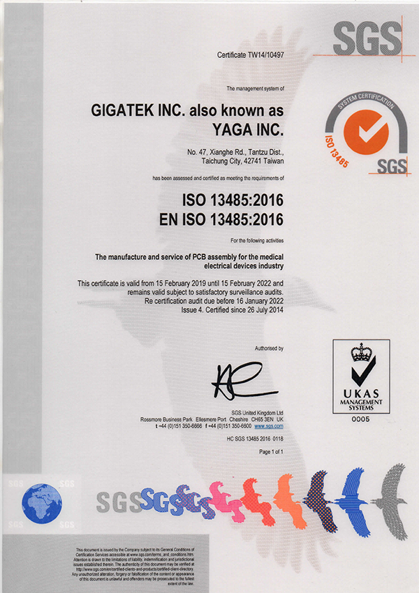

<script src="header.js"></script>

<main class="news-d">

<div class="inner">

	<div class="news-d-t">
		<div class="news-d-n">GIGATEK and YAGA Awarded the certification for ISO 13485:2016 Medical Device Quality Management System</div>
		<div class="news-d-d">2019-02-28<span class="publisher"><i class="fas fa-pen-nib"></i>Chih-Chuan, Chen</span></div>
		

	</div>
	<div class="news-d-i">
		<p>
			GIGATEK and YAGA announced that we were awarded the certification for 13485:2016 Medical Device Quality Management System by SGS Taiwan Ltd. in June 2017 for medical device electronics manufacturing. Mr. Moses Huang , senior executive vice president of GIGATEK, said: "Obtaining this certification demonstrates our commitment to the quality of medical device products and to fulfill customer and international regulatory requirements.
		</p>
		<p>
			<div class="title">About ISO 13485: 2016</div>
			 The ISO 13485 international standard provides an effective framework that complies with the complex requirements of medical device quality management system, to facilitate manufacturers and service providers to follow regulations and demonstrate compliance status. For medical device can ensure the consistency of design, development, production, storage and transportation or other related services and bringing medical devices to their expected use.
			 <br><br>
			 For details about ISO 13485:2016, please visit&nbsp;&nbsp;<a href=" https://www.iso.org/iso-13485-medical-devices.html" target="_blank"> https://www.iso.org/iso-13485-medical-devices.html</a>
		</p>
		<a class="venobox" href="public/SRC/ISO-13485.jpg"></a>
	</div>
	<a href="news.php" class="btn">Back</a>
</div>

</main>

<nav class="bread">

	<div class="inner">

		<a href="index.php">Home</a><span class="bread-space">/</span><a href="news.php">NEWS</a>

	</div>


</nav>

<script src="footer.js"></script>